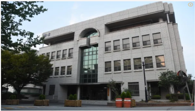
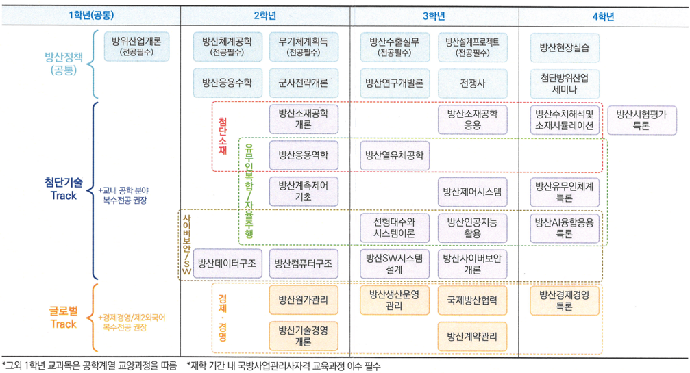

정책과 시장 이해
글로벌 방위산업 정책 및 시장 동향을 분석하고, 국내외 방산시장 진출 전략을 학습합니다.
Undergraduate Program
첨단방위산업학과는 방위산업 핵심기술, 정책, 실무교육을 결합해 국방과 산업 현장을 연결하는 융합형 인재를 양성합니다.
첨단방위산업학과는 융합형 교육과정, 전문가 네트워크, 산학협력 기반 실무교육, 맞춤형 취업 지원을 통해 방위산업 현장에서 요구하는 전문 인재를 양성합니다.

학과 공식 홈페이지에서 자세한 안내를 확인할 수 있습니다.
국방 첨단기술과 방위산업 정책을 함께 이해하고, 연구개발 전 과정을 학습하는 실무형 교육을 지향합니다.
글로벌 방위산업 정책 및 시장 동향을 분석하고, 국내외 방산시장 진출 전략을 학습합니다.

방산기업 적용 전략, 무기 획득 및 조달 체계, 첨단 소재와 사이버보안 등 핵심기술을 다룹니다.

방산 연구개발, 시험평가, 시스템 설계 등 현장 프로젝트 기반의 문제 해결 역량을 강화합니다.
1학년 공통 교육부터 4학년 실무 심화까지, 방산정책과 첨단기술 트랙을 단계적으로 연결합니다.

한화에어로스페이스, LIG넥스원, 현대로템, KAI 등 주요 방산기업 및 연구기관과 연계해 현장 중심 프로젝트, 공동연구, 취업 연계형 교육을 운영합니다.